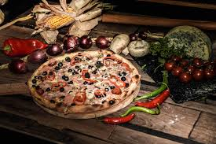
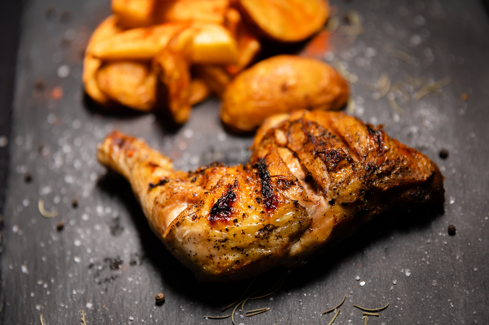

- Pizza
- Pizza Capriciosa
- Ingrediente:
- sos de roșii, mozzarella, șuncă, ciuperci, măsline, ardei
- Timp de preparare:
- 30 minute
- Pret:
- 30 lei
- Pizza Rustic 
- Ingrediente:
- sos de roșii, șuncă, mozzarella, salam, bacon, ciuperci, porumb dulce
- Timp de preparare:
- 40 minute
- Pret:
- 25 lei
- Pizza Bruschetta
- Ingrediente:
- sos de roșii, salam crud uscat, roșii, condimente, busuioc, usturoi, parmezan, mozzarella
- Timp de preparare:
- 35 minute
- Pret:
- 50 lei
- Pui
- Pulpe de pui pe jar
- Ingrediente:
- 1 pulpa 200g, cartofi 150g, salata varza 150g, chifla 60 g
- Timp de preparare:
- 25 minute
- Pret:
- 17 lei
- Pui pe jar big family 4 - 6 persoane
- Ingrediente:
- 2 pui pe jar 2kg, cartofi 600g, salata varza 250g, 6 chifle 160 g, 2 sosuri
- Timp de preparare:
- 60 minute
- Pret:
- 100 lei
- Frigarui piept de pui pe jar
- Ingrediente:
- Piept de pui 150g, cartofi 150g, salata varza 150g, chifla 60 g
- Timp de preparare:
- 15 minute
- Pret:
- 16 lei
- Burger
- Hamburger crispy de pui

- Ingrediente:
- snitel crispy de pui, salată iceberg, roșii, ceapă, castraveți murați, dressing
- Timp de preparare:
- 25 minute
- Pret:
- 33 lei
- Cheeseburger crispy de pui

- Ingrediente:
- snitel crispy de pui, brânză cheddar, salată iceberg, roșii, ceapă, castraveți murați, dressing
- Timp de preparare:
- 15 minute
- Pret:
- 33 lei
- Bacon Cheeseburger crispy de pui

- Ingrediente:
- snitel crispy de pui, bacon, brânza cheddar, salată iceberg, roșii, ceapă, castraveți murați, dressing
- Timp de preparare:
- 15 minute
- Pret:
- 36 lei